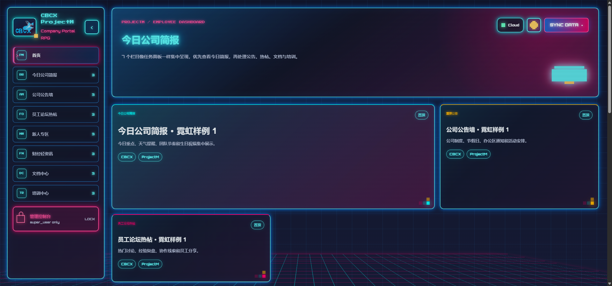
Desktop
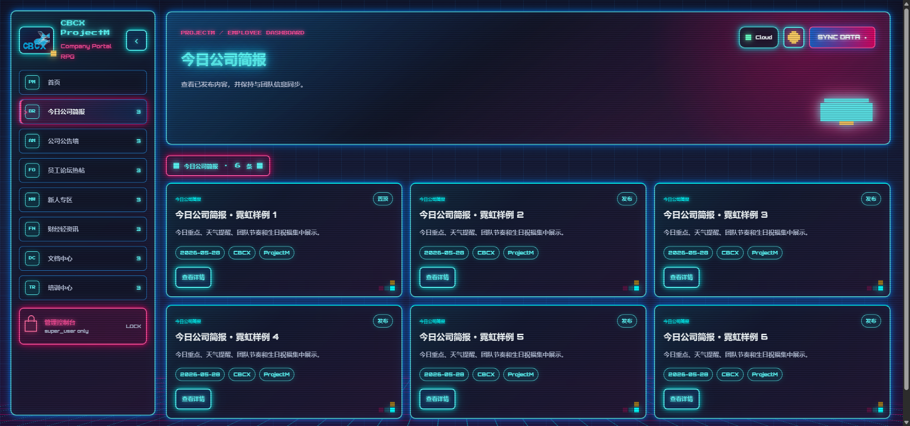
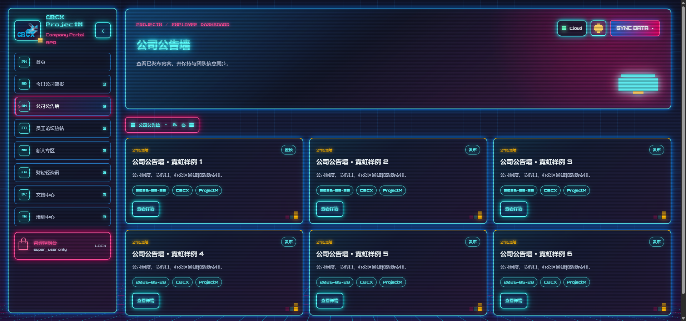
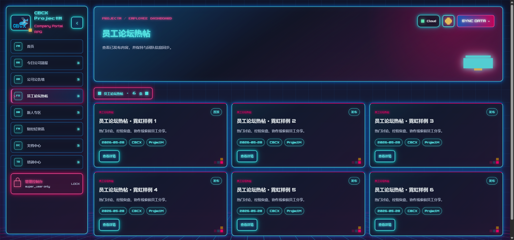
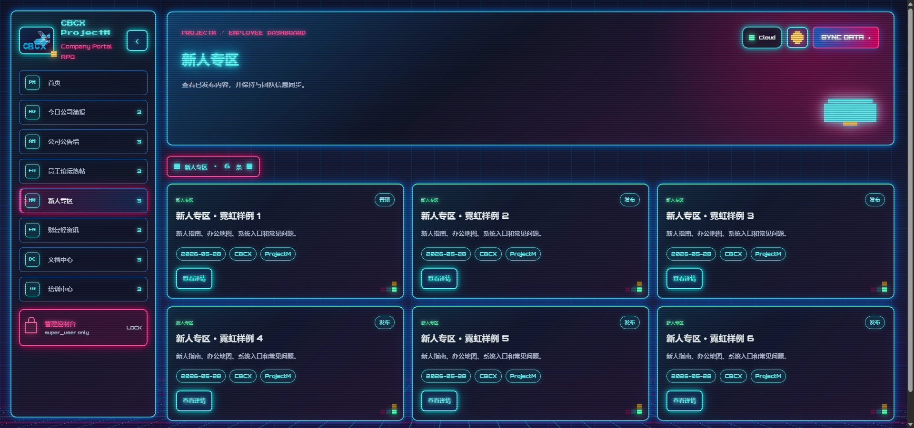
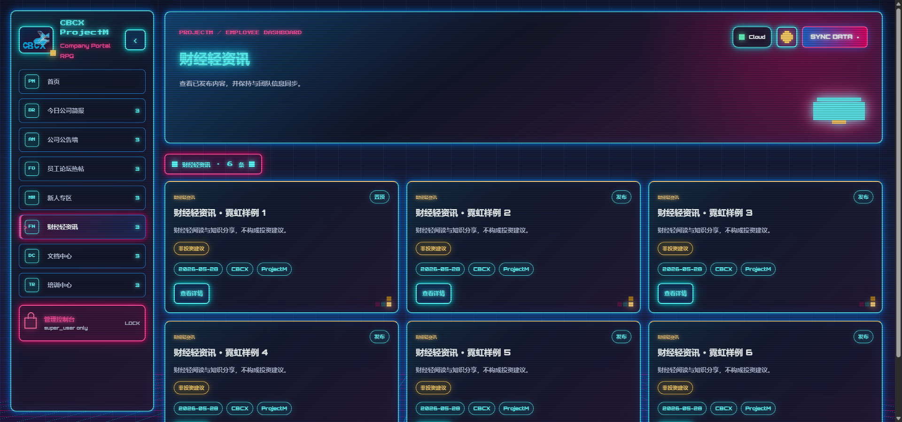
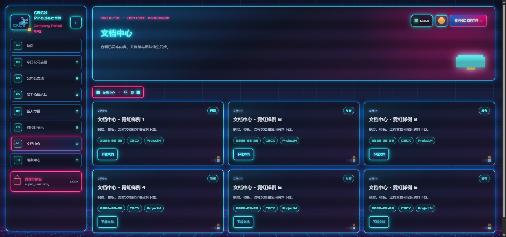
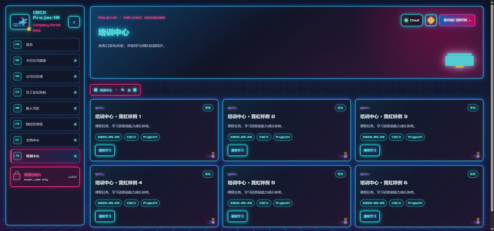
Mobile
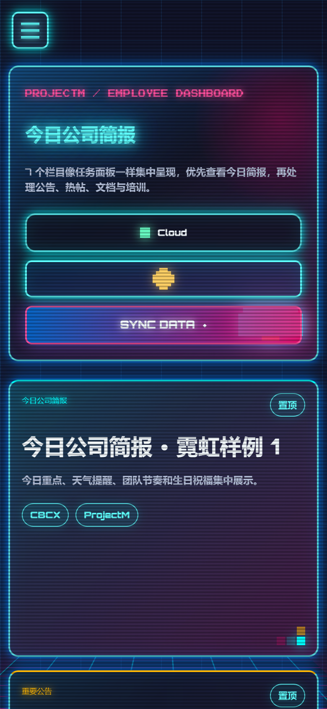
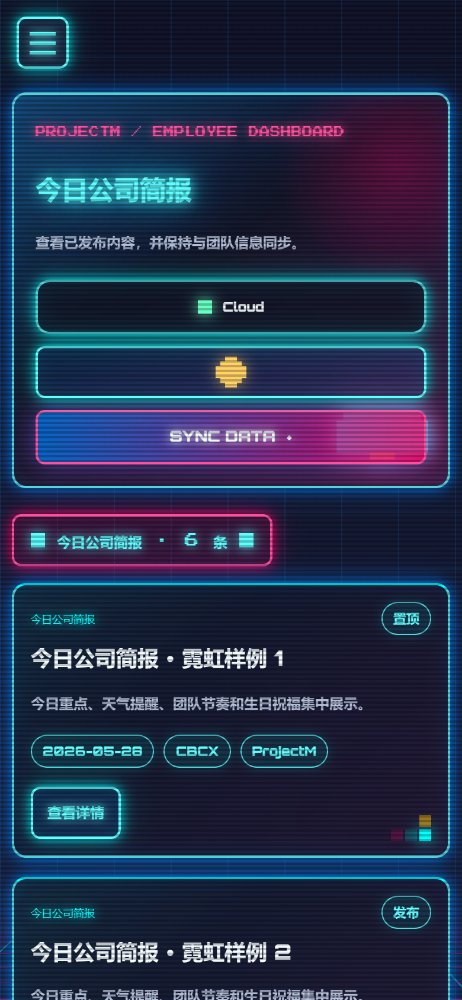
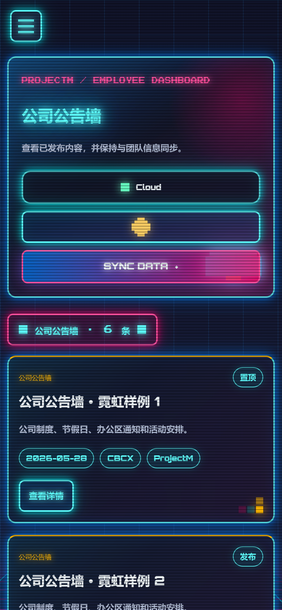
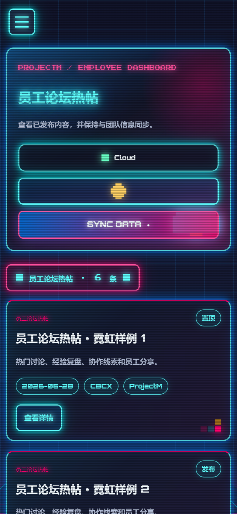
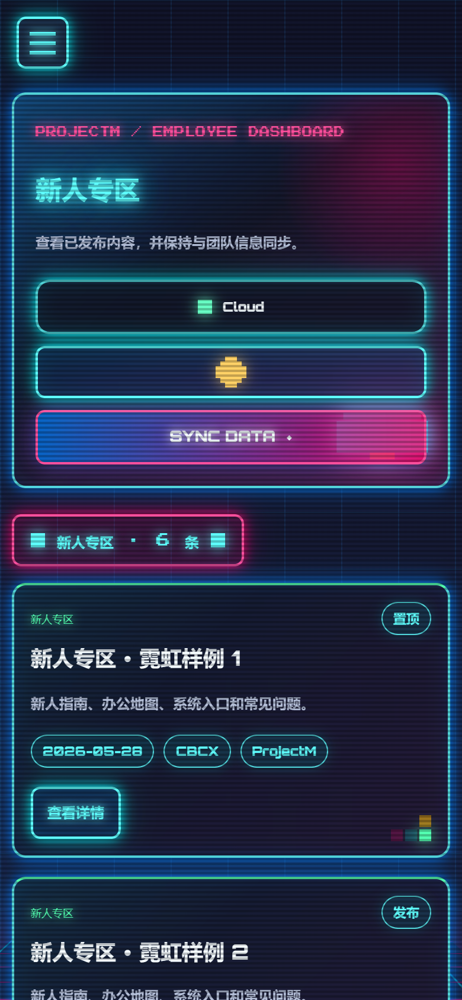
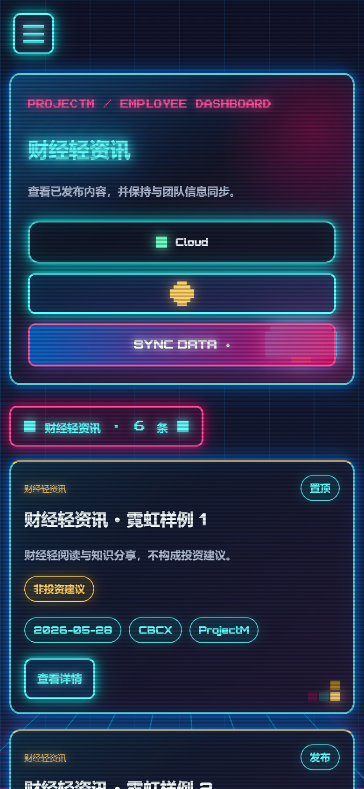
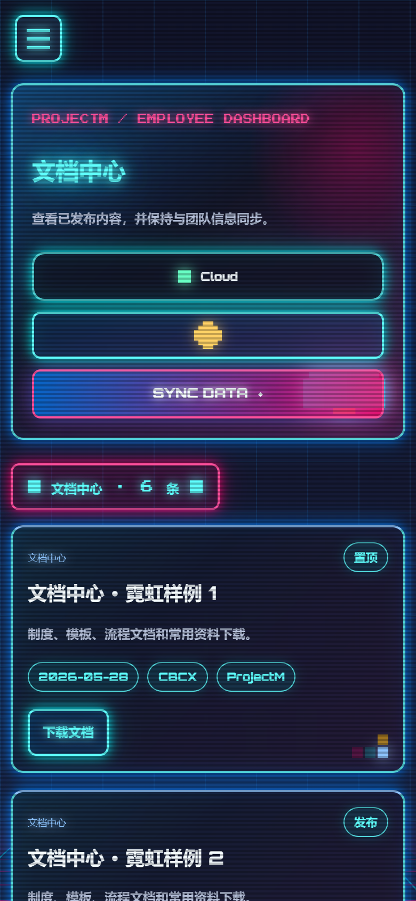
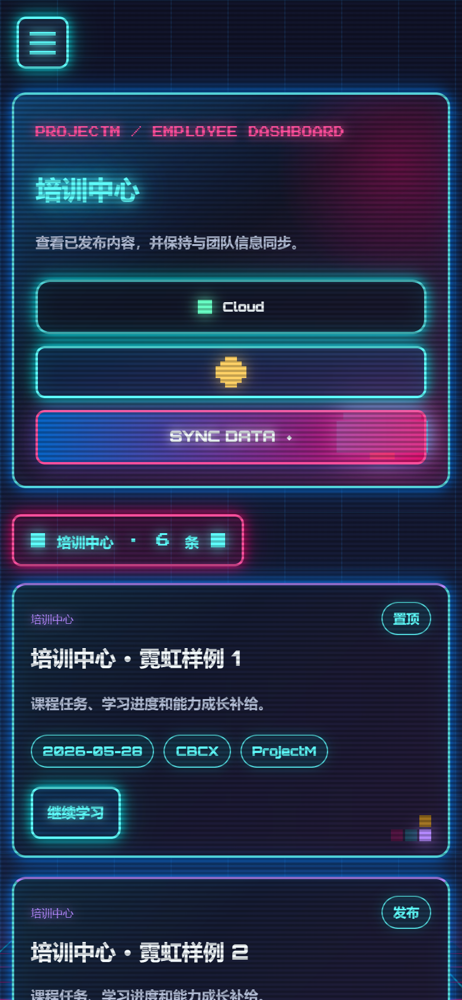
Neon cyan / pink portal style with CRT scanlines, perspective grid, glowing panels, and pixel-inspired controls. Source code is in code/projectm-ui-style-02-retro-futurism/.















